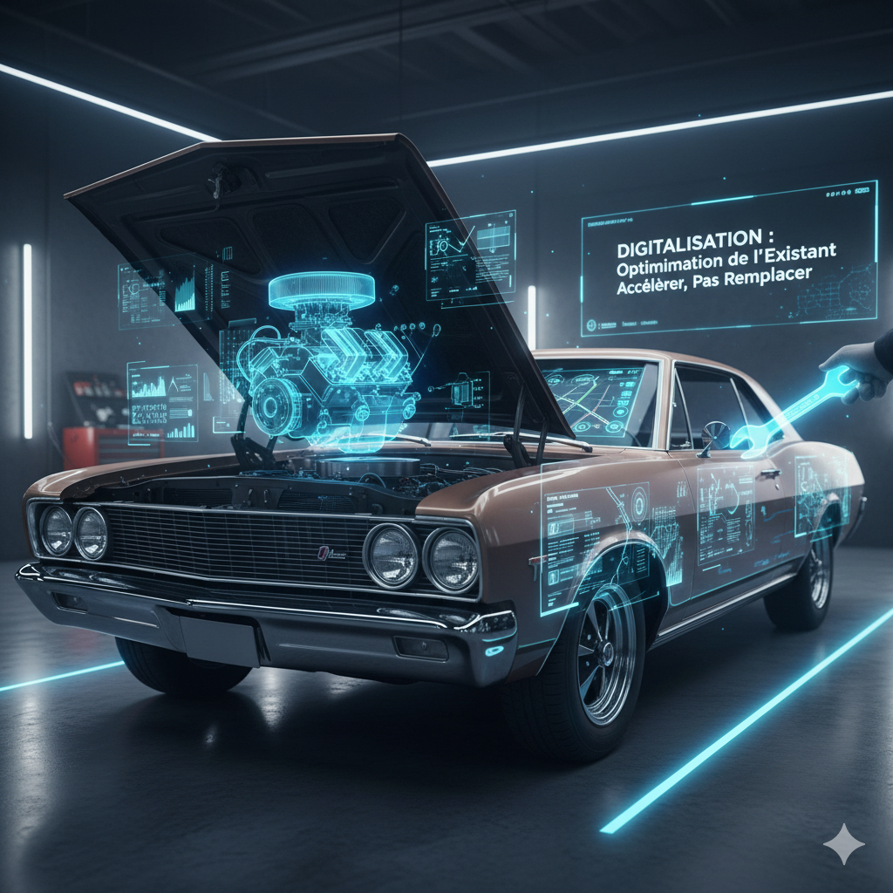
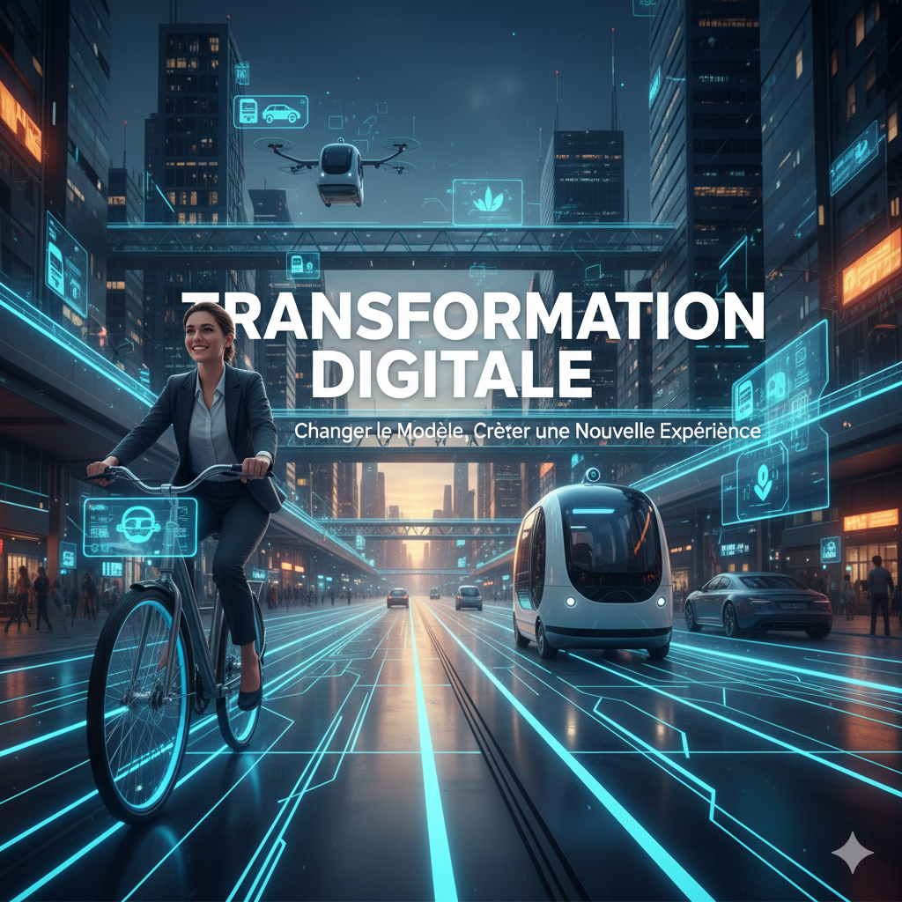

Digitalisation vs. Transformation Digitale : La Différence Qui Va Changer Votre Stratégie (Et Pourquoi l'Un Ne Suffit Plus)
🚀 L'Erreur Coûteuse Que Beaucoup Commettent
Dans le monde effréné d'aujourd'hui, tout le monde parle de "digital"...
Beaucoup d'organisations pensent "se transformer" en adoptant de nouveaux outils...
Chez Décoder le Digital, nous traduisons le jargon technique en savoir-faire concret...

➡️ La Digitalisation : Quand Vous Améliorez Le Moteur De Votre Vieille Voiture
Imaginez que vous avez une voiture fiable, mais un peu lente...
C'est quoi concrètement ?
La digitalisation consiste à convertir des informations ou des processus analogiques...
Exemples que vous vivez déjà :
- • Avant : Remplir des rapports de frais sur papier...
- • Après (Digitalisation) : Utiliser une application mobile...
- • Avant : Archiver des tonnes de documents physiques...
- • Après (Digitalisation) : Scanner ces documents...
La digitalisation est une étape cruciale pour toute entreprise...

🚀 La Transformation Digitale : Quand Vous Remplacez Votre Voiture Par Un Service De VTC Ou Un Vélo Électrique
Maintenant, imaginez que vous réalisez que posséder une voiture n'est plus la solution la plus pertinente...
C'est quoi concrètement ?
La Transformation Digitale est une refonte stratégique et culturelle...
Exemples marquants :
- • L'Entreprise : Un service de location de DVD physique...
- • Après (Transformation) : Création d'une plateforme de streaming...
- • L'Entreprise : Un fabricant de pneumatiques...
- • Après (Transformation) : Proposer un service "Pay as you drive".
🔑 Le Test De La Chaise Musicale : Comment Savoir Où Vous En Êtes ?
Pour clarifier cette distinction cruciale, voici un tableau récapitulatif :
| Caractéristique | Digitalisation |
|---|---|
| Objectif Principal | Optimiser, accélérer les processus existants |
| Portée | Tâches ou départements spécifiques |
| Effet sur le Business | Augmentation de l'efficacité et productivité |
| Culture Interne | Remplacer l'humain par la machine (pour les tâches répétitives) |
| Question Clé | "Comment faire mieux ce que nous faisons déjà ?" |
📌 La Digitalisation est une tactique d'efficacité. La Transformation Digitale est une stratégie d'innovation et de survie.
✅ Stratégies Concrètes : Vos 3 Actions Pour Passer De L'Optimisation À La Transformation
- Action 1 : Le "Reset Client" (Culture)
Ne commencez pas par l'outil, commencez par la problématique client... - Action 2 : Mesurez la "Valeur", pas juste la "Vitesse" (Métriques)
Arrêtez de mesurer uniquement le temps gagné ou les coûts réduits... - Action 3 : Osez le "Nouveau Canal" (Vision)
Identifiez un seul nouveau canal de vente ou de service...
🌟 En Conclusion : Adaptez-vous Ou Disparaissez
La Transformation Digitale n'est pas une course à l'outil le plus cher, c'est une course à l'adaptation...